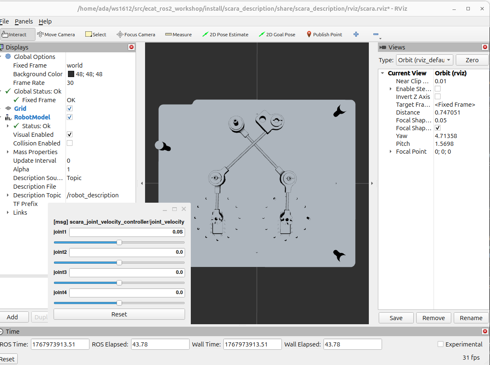

Visualisation du modèle
Il est possible de visualiser le modèle issu du fichier URDF du pantographe à l’aide de RViz. Cet outil peut être utilisé pour vérifier la validité du modèle lui-même, c’est pourquoi nous l’avons exposé au travers d’une launch file qui traite automatiquement le fichier contenant les macros Xacro. Cette approche est destinée au développement ; ainsi en production, il faudra utiliser le fichier URDF généré pour éviter le gaspillage de ressources.
Pour lancer la visualisation, utilisez la commande suivante :
ros2 launch pantographe_description display.launch.py
Vous pouvez ainsi vous assurer du bon placement des repères et d’autres paramètres.
{kind=link}

Etant donné que nous n’avons pas réussi à configurer le fichier URDF de manière à obtenir un système fermer, nous avons laissé tout les liens commandable et nous n’avons pas fermer le pantographe dans RViz. Le système est commandable à l’aide du scara_joint_velocity_controller. Afin d’utiliser ce contrôleur, il faut d’abord le configurer. Comme nous avons repris les codes du scara, il faut modifier le fichier scara.ros2control.urdf. Il faut modifier chaque joint que l’on souhaite ajouter de la manière suivante : .. code-block:: xml
- <joint name= »joint1 » type= »revolute »>
<command_interface name= »position »/> <state_interface name= »position »>
<param name= »initial_value »>-3.14</param> <param name= »min »>-5</param> <param name= »max »>5</param>
</state_interface> <state_interface name= »velocity »>
<param name= »initial_value »>0.0</param>
</state_interface>
</joint>
Dans ce fichier, nous avons ajouté une interface de commande en position et deux interfaces d’état (position et vitesse) pour chaque joint. Il y a aussi des paramètres pour définir la valeur initiale, la valeur minimale et maximale pour chaque joint.
Ensuite, il faut modifier scara_control.yaml et selectionner y ajouter les joints que l’on souhaite commander. Dans notre cas, nous avons ajouté les quatre joints du pantographe. Voici un extrait du fichier modifié : .. code-block:: yaml
scara_trajectory_controller: ros__parameters:
command_interfaces: - position state_interfaces: - position joints: - joint1 - joint2 - joint3 - joint4
scara_position_controller: ros__parameters:
joints: - joint1 - joint2 - joint3 - joint4
scara_joint_velocity_controller: ros__parameters:
joints: - joint1 - joint2 - joint3 - joint4